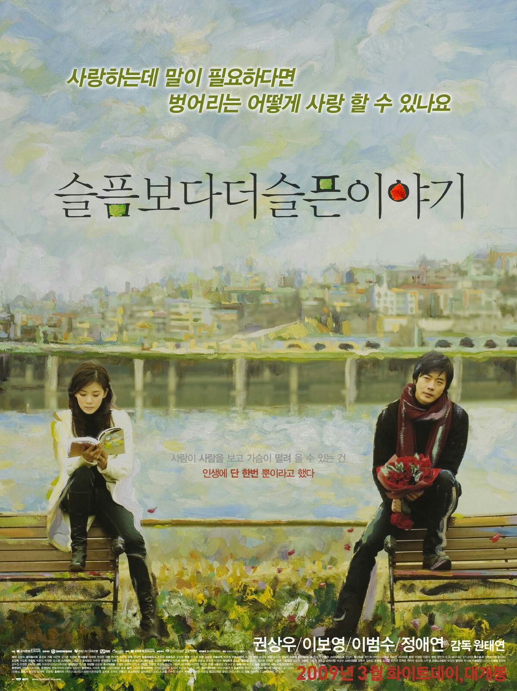
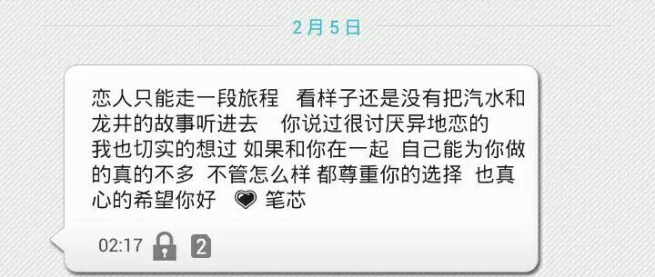

正文:
喜欢一个人，即使现在他有女朋友了，联系方式双删了，我也还记得他的QQ和微信。
半夜睡不着 、做噩梦醒的时候、一觉醒来觉得自己被整个世界抛弃的时候，都会去搜他的QQ号。
他有了女朋友之后把空间和朋友圈都锁了，但是我还是忍不住去看，感觉那几个数字是我们俩个之间联系的唯一纽带。
五年了，这大概是除了被迫读书之外，我所做的最久的一件事。
我一直以为自己是一个健忘的人，前一秒别人说的事，第二秒我就会忘。可是，关于你的消息，你的各种，你的全部，我怎么也忘不掉。
之前我以为看不到就会忘了你；后来以为异地就会忘了你；然后以为你有了女朋友会忘了你；甚至希望你变弯也不要跟别的女孩子在一起；现在，大概等你结婚了就好。

比悲伤更悲伤的故事是，我明明知道无论怎样，结局都不会是我，我却还在傻傻坚持。
～～～我是一条分割线～～～
接下来我要讲一个很长的故事，我可能会讲很久，你有兴趣听吗？
我坚持最久的事就是爱你❤
一、
自己是一个超级没耐心的人，做什么事都是三分钟热度。很容易喜欢上一个东西，也很容易厌倦，然后另寻新欢，陷入一个死循环。
看着墙角积了厚厚灰尘的尤克里里，想起一个马来西亚妹子(谢谢评论区指正)唱的超甜的《好想你》，被她可爱的样子和弹奏吸引，也买了一把粉红色的尤克里里。起初，还报了课程，也有一直认真去上，手指尖磨出了硬硬的透明的茧。会去优酷上面搜教学视频认真的学，也可以弹一首曲子了——女朋友要带回家，谭杰希的。
过了半年，它就被我郑重的装好，小心的放进盒子里，摆在宿舍的墙角，在墙角生了根。
回家的时候，书架上面那些从来没有被翻阅过的历史名著。
初高中时期，盛行读名著。老师也鼓励我们多看名著，对写作有好处。作为一个作文永远只能得一半分数的人，为了作文可以涨点分，顺便背几句名句凑齐800字，便一鼓作气买了20多本名著。记得名字的好像有:基督山伯爵、飘、茶花女、生死场、百年孤独...特别无聊的时候有想过要看，可是翻开看了几页，就觉得好无聊，每个字都好生涩，犯困。所以到现在，那20多本书除了茶花女和飘，都成了架子上的摆件。
我是一个胖胖的女孩子，从高一体重上了110之后，就开始叫嚣要减肥。拉着好基友每天在操场跑四个圈，然后他会奖励我一个四个圈(冰激凌)，外加沾了满满辣椒烤的皮脆脆的肠。就这样，我的跑步也仅坚持了1个月。之后也断断续续的减过一段时间肥，由于秉持着吃饱了才有力气减肥的理念，至今体重还在110+上下徘徊。夏天只敢穿长裤，偶尔狠狠心，节一个月食瘦到100斤以内，只要一放宽心，俩三天就胖回来。
大二上的时候，被陈意涵所吸引，觉得运动girl实在迷人，便买了一堆狂拽酷炫的装备，下了跑步app。从开始跑2km都要喘，到后来8km无压力，对那些朋友圈跑了3、4km就觉得自己棒棒哒的人嗤之以鼻，后来因为跑步后不喜欢拉伸，腿部肌肉太明显，放弃了跑步。虽然怀念运动那段时间的皮肤状态和睡眠，但是现在就喜欢窝在图书馆，窝出了游泳圈。
仔细想想，确实没有坚持特别久的事情，除了被迫上学，最喜欢的跑步也才坚持了3个月。我一直不相信有什么东西会让我坚持很久，直到我遇见了你。
YHW同学，
就像命中注定一般。
二、
今年我20岁，除了上了17年学，我坚持的最久的一件事就是爱你。
时间轴可以回溯到2013年的夏天，被风吹鼓的校服裤、被电扇打晕扑簌簌掉下来的虫子雨、厕所传来的消毒水和檀香混合的味道、椅子底下磨损严重变成了灰黑色的足球，还有一个穿着白衬衫的少年在足球场纵情奔跑的身影。
我:“你知道我是什么时候喜欢上你的吗？”
你稍微顿了一会，嘴角向上，露出好看的牙齿说:“你睡着露出后背，我给你盖上我外套的时候？”
我摇头。
你:“我进球的时候？”
我还是摇头，“继续猜。”
他:“我朗诵课文的时候？”他是学播音的，声音很好听。
“主动帮忙打扫堵塞女厕所的时候？”彼时很多女生喜欢把用过的姨妈巾丢到厕所里面，厕所经常会堵，然后不明的物体就会漫过整个厕所。他有主动帮忙打扫过俩次，是我见过女厕所最干净明亮的时候。
......
我:“都不是。虽然以上样子的你都很吸引人，但是我不是因为这些喜欢上你的。”
他:“那是因为什么？”
我:“一天午睡我醒来的时候，你头靠我靠的特别近。正好阳光撒在你的背后，我觉得熟睡的你好像天使一样。长长的眼睫毛在微微抖动，皮肤白的很好看，嘴唇像涂了唇蜜，粉嘟嘟的超可爱。我情不自禁的碰了一下你的脸，整个人像触了电一样。后来我就不能平静的直视你啦。所以，我是从这个时候开始喜欢你的。”
后来，我在我是歌手上面看到李健穿着白衬衫弹着吉他唱贝加尔湖畔的时候，脑子里就出现了你的样子。那时候的你，跟李健比，过而无不及。
三、
你肯定没有注意到，从那天开始，我开始频繁的出入学校的书店，学校书店兼营精品店。
每天第二节课间，都会拉着小伙伴去看有没有新到的头绳和发卡。我的头绳从丑陋的一块钱一包的黑头绳变成了各种粉色的蝴蝶结。
每天开始认真扎高马尾，因为你说过林志玲绑高马尾很好看。还会用粉红色的发卡夹好掉下来的碎发。
开始不按照妈妈每天准备的衣服穿着去学校，虽然每天只能穿校服，不能穿好看的裙子短裤。开始穿紧身的T恤，执迷于显身材的衣服。
用时髦的圆框眼镜换下了用了6年的黑框眼镜，偷偷戴上好看的锁骨链。
以前起床到出门只需要五分钟的我，开始磨磨唧唧，头发会梳很多遍，衣服换来换去，趁妈妈不注意，还会偷偷喷点妈妈的香水在校服上衣的左袖子上，因为你坐在我左边。
坐着的时候，腿不再大咧咧的岔开，并的紧紧的。之前一直习惯于驼背含胸，开始慢慢把背挺起来，坐着听课的时候，背也挺的异常的直。
做作业变的超认真，做的也超快，因为希望你只抄我一个人的作业。
会偷偷的帮你收拾乱成一团的桌子；替上课睡着的你打掩护；打着班级荣誉的旗号叫上一大帮人去看你们踢球，自费买上一大箱水，其实是想让你喝上我递的水。
不再直接用手压死被电扇打晕的虫子，开始用纸巾轻轻把他们从桌子上拂下去。
什么东西都备俩份，你早读下课的时候一般都会选择睡觉，所以错过早饭时间。每天都会带俩份早饭过来，谎称妈妈做多了，吃不完，要你帮忙，不然就浪费了妈妈的心意。
你喜欢陈绮贞，我在手机里面下了陈绮贞的所有歌，背下百度百科里面她所有的经历。开始有意的向你表达自己对陈的喜爱，不经意的哼出陈的歌、故意跟别人讨论陈、讨论的超级大声，课间休息的时候假装不经意的递给你一只耳机，一起听陈的歌。
他是学播音主持的艺术生，假装自己想学标准的发音，天天缠着他，问他怎么可以发出好听的音色。
他想考云南艺术学院，我就天天去水云艺的贴吧，最后变成了云艺贴吧的元老级人物。
可是生活并不是童话故事，你没有在我喜欢上你的时候，恰好也喜欢上我。
四、
你夸过我一件粉色格子的上衣好看，我为此买了4件粉色格子的衣服，每天就穿这几件衣服。最后你都揶揄我，是不是粉色格子狂热粉。
你说我字迹太潦草，你看不清我写的答案，我开始练字，从狂草到之后的行楷，开始有很多人夸我字好看。
没有再课间去买过辣条，每天都带俩个苹果来学校。你知道我不喜欢吃苹果的，但是我妈偏偏相信，“一天一苹果，医生远离我。”所以只好拜托你咯。会把皮削掉，用保鲜袋包好，放在桌子的右上角，这样你午睡起来就不会觉得饿。
是不是我表现的太随意，太不经心，所以到毕业，你都没发现我喜欢你。
五、
转眼间，就到了你要去长沙去学艺术的时候。我强迫你带各种书，虽然知道你不一定会看，但是万一你哪天脑子开窍了，没书看，还是不好。
我跟你说了好多好多，唯独漏了一句，我偷偷在心里说了，不知道你听到没有——我等你回来。你揉了揉我的头，要我好好学习，你说像我这种女孩子就应该去武大，因为像武大郎一样高，我气的追着你满教室跑，风吹鼓你的校服外套混着走廊飘来的消毒水味道，至今还深深的印在我脑子里。
六、
你从长沙回来了，紧张的复习，到高考之前我们都没有说几句话。我们唯一的合照，就是高考毕业照。我胖的像个球，还箍了一个傻傻的粉红色发箍。你在照片的右上角，从右往左数第六个，笑的露出虎牙。照毕业照那天太阳好大，大家都睁不开眼睛，可是你却照的很好看。
毕业之后中断了俩年的联系，你换了三个女朋友，我换了俩个男朋友。
我以为我跟别人在一起之后就可以忘记你的，可是做不到，又不想在感情世界里面不诚实，所以选择了独身主义。
断断续续从同学那里听到你的消息，怕见到你，所以同学聚会从来不去。
同学发给我你新女友的照片，真好看。
比屏幕这头的我好看多了，不知不觉啪嗒啪嗒的眼泪就掉了下来。
更新:
我有坐过22个小时的绿皮火车硬座去昆明找他，亲口对他说我喜欢他。
我有除夕打过3个小时的电话说喜欢他。
我有以打赌的方式说喜欢他。
我有冬天头发半湿，裹着浴巾，站在走廊，冻的瑟瑟发抖说喜欢他。
。。。。。。

有很多人都会劝我，说我只是喜欢喜欢他的那种感觉。他也觉得我只是喜欢成了习惯。
我不想做什么解释。
我只知道，如果他现在跟我说:“我们在一起吧。”就算只有一天，我也会马上买好去昆明最早的机票，去见我爱的人一面。
以上。
8.23号的更新。
不知不觉这个回答都过去三个月了，作为我第一个破千赞的回答，想来给大家一个交代。
我以为我这辈子都忘不掉他了，每天重复搜他各种东西，把关于他的一星半点深深刻进脑子里。
农历六月初二是他的生日，本来事先跟西安的一个同学说好了，她会代替我给他发一句生日快乐，因为从来没有跟他说过，想让这份暗恋圆满一点。临时被放鸽子，碰到好心的@南一，圆了我的小梦想。他大概猜到是我了，但是不确定。
过了一个月，他给我打了一个电话，我把他拉进了黑名单，某一天突然无聊翻手机，看到未接来电，就把他从黑名单里拉出来了，然后心怀不轨的回了个内容为问号的短信。
他晚上给我打了三个电话，第一个电话问我，那句生日快乐是不是我发的，我装作超级冷淡的样子说不是，然后就挂了。
挂了，心里千回百转，然后给他回了条短信，说是我。
他又打过来一个电话，他说我知道肯定是你，只有你才会这样作。
我一直以为我装的超级好的呐，没想到这么明显。
说了一些各自的境况，扯了闲白，以他要收拾屋子告终。
过了十分钟，又来了一个电话，我问他还有事吗？他说有些事我还是想要告诉你，不管你信不信。
我是有很认真的想要跟你在一起过的，你电话跟我告白的时候，暑假我约你出门的时候。
可是你电话告白完，就跟我说你快点想好答不答应，不答应我就去撩别人了，让我觉得你好像没那么喜欢我。
暑假的时候，你不是哭着跑开了吗？感觉性格好像不太合适。
然后就没有然后了。
我说电话中说那句话，是怕你拒绝我尴尬。
暑假的时候，在高中门口，你要我快走，说让你舅妈看到了不好，舅妈就住在附近。
加上一些共同的回忆，他没有想到我那么了解他，他骗了我超级多次他有女朋友了，这次真的跟一个98的小妹妹在一起了。
挂掉电话，我突然就觉得超级轻松，没有去再搜过他的相关信息，除了经常聊天会提到他，毕竟在我的心里横冲直撞了这么多年。
到现在，提起他，超级云淡风轻了。
所以结论是，没有忘不掉，只是时间长短，姻缘际会。
忘掉不爱你的人，好好照顾你自己。
觉得忘不掉的时候，深夜梦回哭泣的时候，去做做别的吧。去看电影去追剧去旅游去学习，不要除了喜欢他什么都不做。
最后:希望每个小仙女小哥哥都可以和自己喜欢的人过自己的一生，暂时还没遇到的，一定要帮未来的他照顾好自己啊。
来自无所不知的路人甲，晚安加早安。